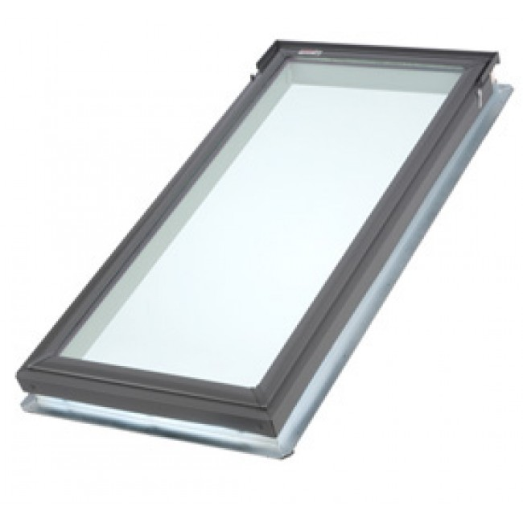
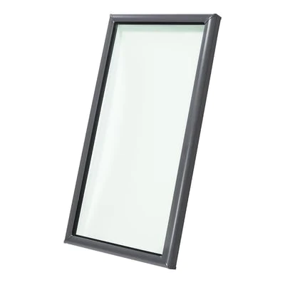
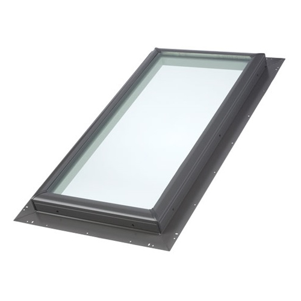

Unsure what you have
Click here for a guide on how to identify different types of skylights or if you are unsure how to measure.

Deck-Mounted Skylight
Deck-mounted skylights nail or screw down to the roof decking and will typically have a low profile on the roof.

Curb-Mounted Skylights
Curb-mounted skylights are the most common installation preference in low-pitch or flat-roof situations.

Self-Flashed Skylights
Self-flashed skylights differ more from both deck and curb-mounted skylights because their curb and flashing are built into the skylight.